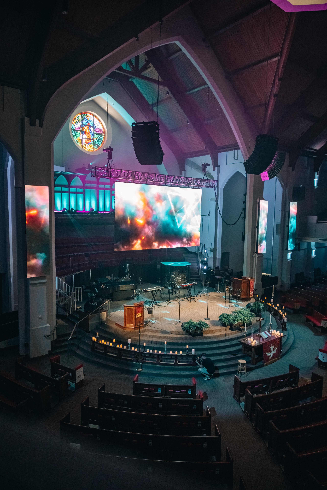
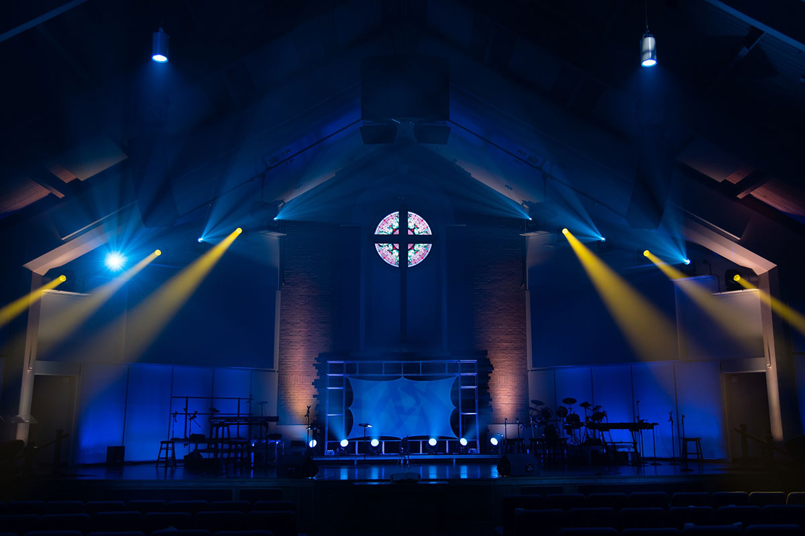
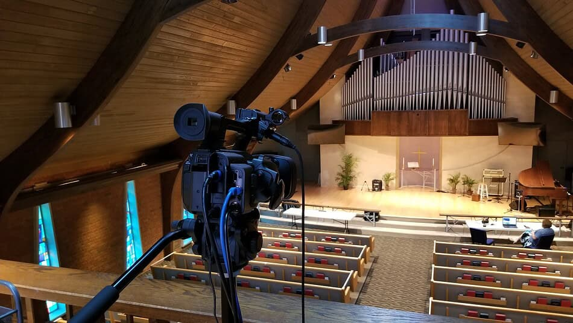

Every word.
Every note.
Heard.
We design, tune, and teach sound, video, and lighting systems for churches — so the sermon lands in the last pew, the choir hears itself, and your volunteers walk in on Sunday already confident.
Speech intelligibility we design to — solidly “good” on the standard IEC scale, in every seat we sign off on.
Coverage evenness goal, front row to balcony. No loud seats. No dead seats.
No gear pitch on the first visit — we listen to your room first.

Most church tech problems aren’t gear problems. They’re room problems, aimed-speaker problems, and nobody-ever-tuned-it problems — and they’re fixable without starting over.
We’re engineers who have sat in the booth on Sunday. We know the volunteer who got handed the keys at 8:40am, the choir loft that can’t hear the pulpit, and the stream that sounds fine in the room and rough at home.
So we build systems around people: measured first, tuned by ear and by instrument, and simple enough that a new volunteer can run a full service from a one-page sheet.
Churches & worship spaces assessed, designed, or tuned
Service radius from downtown Chattanooga — one day’s drive, same-week support
Working exclusively with houses of worship and the teams who run them
Our standard: every system ships with a one-page Sunday run sheet
One team for
the whole signal
Pick a discipline. Every engagement starts with measurement — and ends with your team trained, not just your system installed.
What is your room
trying to tell you?
Tap the sentence you’ve heard in the lobby. We’ll translate it into what’s actually happening — and what usually fixes it.
Old stones.
New clarity.
Stone sanctuaries, metal gyms, 40-seat chapels, 2,000-seat auditoriums. The room changes. The standard doesn’t: every seat, every Sunday.
The 1927 sanctuary that kept its soul — and gained a wall
Flown arrays concealed in the arch, a center LED wall sized to the rose window, and candlelit services that still feel like candlelit services.

Light that serves the song
House-blind-friendly fixtures, haze-free depth, and scenes a volunteer can recall with one button.
“For the first time in thirty years, I can hear every word from the back pew — and I sit there on purpose now.”

Organ, piano, choir — and a stream that sounds like the room
A separate broadcast mix, balcony camera positions that don’t block a single seat, and choir-loft fills so the loft finally hears the sermon.
A console a new volunteer can run by week two
Show layers built for the service — DCAs for speech and music, house-only buses, and a labeled, locked-down starting scene.
Close enough to
be there Sunday
We don’t fly in, install, and disappear. If we design it, we can be in your booth within a day’s drive — for tuning, training, Easter, and the Christmas cantata.
Outside the ring? Schools, theatres, and civic rooms inside the radius keep us honest — and multi-site churches with a campus further out, call anyway. If we’re not the right fit, we’ll tell you who is.
Listen first.
Then measure.
No proposal before a visit. No visit without listening — to the room, and to the people who serve in it every week.
Walk & Listen
We sit in your seats — all of them — during a real service if we can. We hear what your congregation hears, including the seats nobody picks anymore.
Measure & Report
Intelligibility, coverage, and reverberation measured and written up in plain language, with photos. You keep the report whether you hire us or not.
Design & Build
A design priced in stages your leadership can approve one at a time — fix the worst seat first. Installed clean, labeled, and documented.
Tune & Train
System tuned by instrument and by ear, then hands-on training for your team — plus a one-page run sheet and a first-Sunday we’re in the booth with you.
Sunday stories
Before you ask
Almost never. In most rooms, re-aiming, re-tuning, and fixing two or three weak links — a processor setting, a loudspeaker position, an untrained broadcast mix — gets you most of the way. Our measurement report ranks fixes by impact per dollar, and we’ll tell you plainly when a piece of gear has earned its retirement.
That’s who we design for. Locked starting scenes, clearly labeled layers for the service, house-only controls separated from stream controls, and training paced for real people — not engineers. If a system needs a professional to survive a Sunday, it’s the wrong system for a church.
Our smallest regular clients seat under 80. The measurement visit is a flat fee, designs stage in phases, and a 60-seat chapel deserves intelligibility exactly as much as a cathedral does. Small rooms often improve the most, fastest.
Yes — concealment and reversibility are a specialty. Arrays colored and positioned into arches, cable paths that don’t touch historic fabric, and documentation your trustees and preservation board can actually approve.
The first walkthrough is free within 60 miles of Chattanooga. The full measurement report is a flat fee, quoted up front, and credited in full if you proceed with a design. No hourly meter running while we’re still getting to know your room.
Let’s make
Sunday clear.
Tell us about your room — the seats that struggle, the stream that frustrates, the Sunday that went sideways. We’ll reply within one business day with honest first thoughts, not a sales sequence.